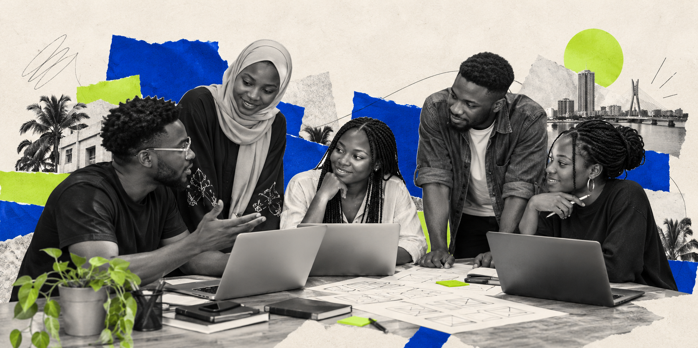

Multiplayer gaming platform
Alteturia Games
Nigerian favourites and classic party games, brought together in a browser-based multiplayer experience. Create a room, invite friends and play on your phones.
Play Game Explore ProjectWe develop digital products and practical solutions, while helping emerging technology professionals grow through guided learning, real projects and collaboration.
Multiplayer gaming platform
Nigerian favourites and classic party games, brought together in a browser-based multiplayer experience. Create a room, invite friends and play on your phones.
Play Game Explore ProjectPractical support for your digital products, your team and the people you want to develop.
From a new product idea to an existing product that needs testing or a workflow that needs improving, we help you define the problem and develop a practical solution.
Digital experiences built around your users and business needs.
Functional versions of ideas you can test, improve and develop further.
Connected tools and workflows that reduce repetitive work.
Have a product already? We test existing digital products to help identify usability issues, check how features work and highlight areas for improvement.
Systems that make information easier to organize, explore and use.
We organize and facilitate practical training, workshops and capacity-building programmes for organizations and communities, helping people develop skills they can put to work.
Guided sessions that make technology and digital skills easier to understand and apply.
Learning experiences shaped around your team’s needs, goals and practical challenges.
Support with planning and facilitating learning activities that encourage participation and collaboration.
A growing community bringing together learners, technical professionals and collaborators to build and learn together.

Progress grows when people build together. Connect with fellow learners and technical professionals, share ideas and put your skills into practice through guided learning and collaborative projects.
From career-discovery conversations to hands-on challenges, explore a few of the activities that bring our community together.
Six career-discovery sessions explored technology pathways, practical learning and the skills behind different roles.
Explore the SessionsA 30-day challenge to practise, document progress and share your work. Participants choose one path: the Learning Track or the Builder Track.
Explore the ChallengeThese are just a few community highlights. Find more past activities and upcoming announcements on our Events page.
See More Events & ActivitiesTell us about the product you want to build or the workflow you want to improve.
Looking to learn or contribute?